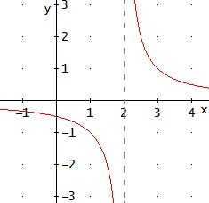

Una función es continua si su gráfica puede dibujarse de un sólo trazo. Matemáticamente, una función es continua en el intervalo:
I = ]𝒶, b[
si es continua en cualquier punto c del intervalo I. lim𝓍 → c ƒ(𝓍) = ƒ(c)
Esto quiere decir que la función es continua en c si la imágen del punto c, es decir, ƒ(c), coincide con el valor que se espera que tenga ƒ(c) (el valor que se espera es el límite).
Continuidad de las funciones Básicas
Funciones Polinómicas
ƒ(𝓍) = 𝒶m 𝓍m + 𝒶m-1 𝓍m-1 + . . . + 𝒶1 𝓍 + 𝒶0 Son continuas en todos los puntos del dominio.
Funciones Racionales
ƒ(𝓍) = h(𝓍) / g(𝓍) Son continuas en todos los puntos excepto en aquellos para los que los denominadores se anulan (g = 0) ya que no podemos dividir entre 0.
Funciones Exponenciales
ƒ(𝓍) = 𝒶x Son continuas en todos los puntos. Los casos especiales son cuando 𝓍 es negativa (𝒶 no puede ser 0) y cuando ∣𝓍∣ está entre 0 y 1(es una raíz).
Funciones Logarítmicas
ƒ(𝓍) = log(𝓍)
Son continuas en todos los puntos del dominio.
Estos son los tipos básicos de funciones elementales y la mayoría de funciones pueden considerarse como combinaciones (composiciones) de éstas.
Ejemplo
ƒ(𝓍) = 1 / x - 2
Como es una función racional, el dominio es todos los reales excepto los valores para los que se anula en denominador (no se puede dividir entre 0), es decir, el dominio es
ℝ - {2}
Y la función es continua en todo su dominio, es decir, en
ℝ - {2}

Notemos que el punto donde se anula el denominador la función crece (o decrece) hacia infinito. Esto se debe a que cada vez el denominador es más pequeño y, por tanto, el cociente es cada vez mayor (o menor, si el denominador es negativo).
limx → 2- ƒ(𝓍) = - ∞
limx → 2+ ƒ(𝓍) = + ∞